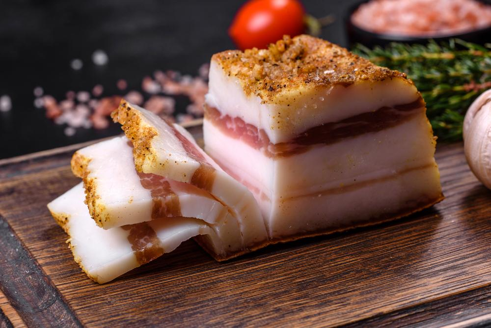
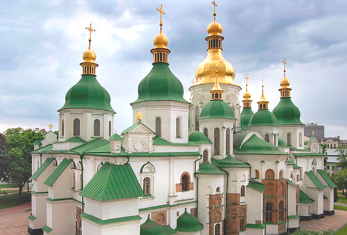

Culture
Rich and great, almost fully stolen by Soviet Union and forgotten by world
The history of Ukrainian culture unfolds at the crossroads of ancient civilizations, where traditions were shaped by diverse influences. Over centuries, Ukraine has forged its identity through unique art forms like vyshyvanka embroidery and the dynamic hopak dance. Despite historical challenges, these traditions reflect the resilience and creativity of our people. Each craft and performance tells a story of a nation that cherishes its heritage while embracing the future. By exploring Ukraine’s cultural landscape, you’ll uncover a rich history and the vibrant soul that continues to thrive within its borders.
Discover the Rich Tapestry of Ukrainian Culture
Ukraine’s cultural heritage is a vibrant mosaic woven from centuries of history, tradition, and artistic expression. Situated at the crossroads of East and West, Ukraine has developed a unique identity that reflects its diverse influences and resilient spirit. From hearty cuisine to enchanting folklore, every aspect of Ukrainian culture tells a story of a nation that cherishes its past while embracing the future. Scroll down to explore the depth and beauty of Ukraine’s cultural legacy.
Ukrainian Cuisine
One of the most delightful ways to experience Ukrainian culture is through its cuisine. Traditional dishes are a celebration of rich flavors and communal dining.
Borsch, a hearty beetroot soup often served with sour cream and garlic buns called pampushky, warms both body and soul.

Borshch itself
Varenyky, dumplings filled with potatoes, cheese, cherries, or meat, symbolize comfort and hospitality.
Varenyky with cherries
Varenyky with mesh potato and onion
Salo, cured pork fat, is considered a national delicacy, often enjoyed with rye bread and garlic.
Pork’s fat, also known as “salo”
Festive occasions feature kutia, a sweet grain pudding made with wheat, honey, nuts, and poppy seeds, and uzvar, a refreshing drink made from dried fruits.
Kytia (Best dish ever)
Traditional beverages like mead, an ancient honey-based drink, have been enjoyed since time immemorial.
Mead, usually alcohol drink
Ukrainian Literature
Literature holds a cherished place in Ukrainian culture, reflecting the nation’s soul and aspirations.
Literary giants like Taras Shevchenko, whose works fueled the Ukrainian renaissance and national identity, Ivan Franko, and Lesya Ukrainka have left an indelible mark on world literature.
Their poetry and prose explore themes of love, freedom, and the human condition.

Contemporary writers such as Serhiy Zhadan, Oksana Zabuzhko, and Andriy Kurkov continue this legacy, delving into modern themes while preserving the cultural essence.

Their poems are known world-wide. Take a look into translation of Zhadan’s poem was published by “New York Times”
Headphones
“Sasha, a quiet drunk, an esoteric, a poet,
spent the entire summer in the city.
When the shooting began, he was surprised —
started watching the news, then stopped.
He walks around the city with headphones on,
listening to golden oldies,
as he stumbles into burned-out cars,
blown-up bodies.
What will survive from the history
of the world in which we lived
will be the words and music of a few geniuses
who desperately tried to warn us,
tried to explain, but failed to explain anything
or save anyone;
these geniuses lie in cemeteries
and out of their ribcages
grow flowers and grass.
Nothing else will remain —
only their music and songs, a voice
that forces you to love.
You can choose to never turn off this music.
Listen to the cosmos, shut your eyes.
Think about whales in the ocean at night.
Hear nothing else.
See nothing else.
Feel nothing else.
Except, of course, for the smell,
the smell of corpses.”
By the way, those writers, like all public people in Ukraine periodically create charity collections to support the armed forces.
Theatre and Drama
The theatrical arts are a cornerstone of Ukrainian cultural life. Visionary directors like Les Kurbas revolutionized Ukrainian theatre in the early 20th century, introducing innovative techniques and fostering a national style.
Kurbas’ theatre, XX century, translation: "Everyone on the road"
Prestigious venues like the Ivan Franko National Academic Drama Theatre in Kyiv showcase classical and contemporary performances, keeping the dramatic arts vibrant and relevant. Theatre in Ukraine is not just entertainment; it’s a profound exploration of societal issues and human emotions.
The musical “You Are Romance” by MUR, 2024
Fine Arts
Ukrainian visual arts are renowned for their diversity and expressiveness. Artists like Maria Prymachenko, celebrated for her vivid folk art depicting fantastical creatures, Ivan Marchuk, and Kateryna Bilokur have gained international acclaim. Their works capture the essence of Ukrainian landscapes and traditions. The Petrykivka painting style, characterized by intricate floral designs, is recognized by UNESCO as intangible cultural heritage.
Prymachenko's works
You may have seen these lovely girls. They are painted by a famous Ukrainian artist - Hapchynska. Now you know.
Hapchynska’s works
Music and dance also play integral roles, with the energetic Hopak dance symbolizing national pride and heritage. Throughout history, songs—ranging from ancient folk melodies to contemporary hits—have been vital in expressing the Ukrainian spirit.
Fight dance, also known as Hopak
Traditional Crafts
Time-honored crafts reflect the ingenuity and soul of the Ukrainian people. Among these, embroidered towels known as rushnyky hold a special and symbolic place in Ukrainian culture.
Adorned with intricate patterns and motifs, rushnyky are more than decorative textiles—they are carriers of cultural heritage and spiritual beliefs.

Rushnyk, embroidered towel from Kharkiv region
These towels are traditionally gifted during significant life events, most notably at weddings. During the wedding ceremony, a rushnyk is often used to bind the hands of the bride and groom, symbolizing their union and the beginning of a shared journey. The patterns embroidered on the rushnyk—such as symbols of fertility, longevity, and prosperity—are meant to bestow blessings upon the couple. It’s also customary for parents to present rushnyky to their children as they embark on new stages of life, serving as tokens of love and protection.
Beyond weddings, rushnyky play a role in various rituals and are commonly displayed in homes, hung over icons or pictures to invoke divine protection and to honor ancestors. Each region in Ukraine has its own distinctive embroidery styles and patterns, making rushnyky a rich tapestry of local traditions and artistry.
Other traditional crafts include pottery, weaving, wickerwork, and the art of decorating Easter eggs known as pysanky are practiced across generations. Each craft is practiced across generations, with each region adding its own unique flair, showcasing a deep respect for tradition and cultural heritage.
Ukrainian Ceramics
Ukrainian Holidays and Rituals
Festivals and rituals deeply rooted in folklore enrich Ukraine’s cultural landscape. Celebrations like Christmas, Easter, Kupala Night, St. Andrew’s Evening, and St. Mykola’s Day feature unique customs and traditional attire. Ritual songs such as carols (kolyadky), shchedrivky, and spring songs (vesnianky) accompany these festivities, preserving ancient rhythms and stories. These holidays are times of communal joy, reflection, and the strengthening of family bonds.
Christmas
Christmas in Ukraine is celebrated on December 24th. It is one of the most significant and beloved holidays, rich with traditions passed down through generations. Festivities begin on Christmas Eve, known as Sviat Vechir, with a family gathering for a solemn supper consisting of twelve meatless dishes, symbolizing the twelve apostles. Traditional foods like kutia (a sweet grain pudding), varenyky, and borsch are served.
Holy Dinner with 12 dishes
After the meal, groups of carolers, often dressed in traditional attire, go from house to house singing kolyadky (carols) and spreading holiday cheer. The evening is filled with warmth, family unity, and the joy of sharing.
Carolers
Easter
Easter is a deeply spiritual and joyous holiday in Ukraine, marking the resurrection of Christ. Celebrated with great enthusiasm, it blends religious rituals with folk customs. One of the most iconic traditions is the creation of pysanky—intricately decorated Easter eggs made using a wax-resist method. Families attend midnight church services, and upon returning home, they break their fast with a festive meal that includes paska (Easter bread), meats, cheeses, and other delicacies. The greeting “Христос Воскрес!” (“Christ is Risen!”) is met with the response “Воістину Воскрес!” (“Indeed He is Risen!”), echoing throughout the celebrations.
Easter Basket, ready to be blessed in the church
Kypala night
Kupala Night, celebrated on the night of July 6th to 7th, is an ancient pagan festival marking the summer solstice and the height of the sun’s power. Rooted in fertility rites and nature worship, it is one of Ukraine’s most enchanting holidays. Traditions include lighting bonfires by rivers and lakes, with young people jumping over the flames to purify themselves and ensure good fortune. Girls weave flower wreaths and set them afloat on the water, hoping to foresee their future in love based on how the wreaths drift. The search for the mythical fern flower, said to bloom only on this night, symbolizes the quest for happiness and knowledge.

Women following the tradition
St. Andrew’s Evening
St. Andrew’s Evening, observed on November 30th, is a festive occasion filled with merriment and traditional customs, especially among young people. It is considered an auspicious time for fortune-telling, particularly regarding matters of love and marriage. Unmarried girls perform various rituals to glimpse their future husbands, such as interpreting patterns formed by melted wax or tossing shoes over their shoulders to see which direction they point. The evening often includes communal gatherings with music, dancing, and traditional foods. It’s a night where folklore comes alive, blending fun with age-old beliefs.
St. Mykola’s Day
St. Mykola’s Day, celebrated on December 4th, is a cherished holiday, especially among children. St. Nicholas, known as a patron saint of children, travelers, and the poor, is believed to visit homes on the eve of his feast day, leaving gifts under pillows or in shoes for well-behaved children. The day emphasizes acts of kindness and generosity, encouraging people to help those in need. Celebrations may include attending church services, family gatherings, and sharing stories about the miracles and good deeds associated with St. Nicholas. The holiday fosters a spirit of compassion and joy, heralding the festive season.
Illustration of St. Mykola
Architecture and Sacred Art
Architectural marvels across Ukraine narrate its historical journey. The wooden churches of the Carpathian region, showcasing exquisite craftsmanship, are UNESCO World Heritage Sites. Iconic landmarks like St. Sophia’s Cathedral, with its stunning mosaics and frescoes, Kyiv Pechersk Lavra, a historic Orthodox Christian monastery, and the majestic castles of Western Ukraine reflect a blend of styles and epochs. These structures stand as testaments to the country’s rich architectural heritage and spiritual life. See more in Landscape and architecture page.
St. Sofia’s Cathedral
Cinema and Animations
Ukraine’s film industry is both historic and innovative.
Classic films like “Shadows of Forgotten Ancestors” by Serhiy Parajanov capture the essence of Ukrainian folklore and aesthetics, earning international acclaim.
Still from the “Shadows of Forgotten Ancestors” film
Contemporary cinema, including “The Guide”, “Home”, and “My Thoughts Are Quiet”, explores modern narratives and societal themes, resonating with audiences both at home and abroad.

Tragicomedy “My thoughts are silent” poster
Tragicomedy “My thoughts are silent” still
Animated works like “Mavka: The Forest Song” bring Ukrainian myths to new generations, blending traditional stories with cutting-edge animation. The film grossed more than three million euros and over 1.2 million viewers in Ukraine alone.
Animated movie “Mavka: The forest song”
Mythology and Folklore
Myths and legends are the soul of Ukrainian storytelling. Enchanting characters like forest spirits (lisovyk), water nymphs (mavka), and household guardians (domovyk) inhabit tales passed down through generations. These stories not only entertain but also impart moral lessons and preserve cultural values. Folk tales and legends continue to inspire literature, art, and cinema, keeping the mystical aspect of Ukrainian culture alive. As you can see above, Mavka is the main character of the film with the highest box office receipts in recent times. Although, she is definitely kinder than in myths and legends. And, in animation she has back.
Mavka: used to pretend the voice of loved to lure men and drown them.
Modern Art and Pop Culture
Modern expressions of culture showcase Ukraine’s ongoing creativity and global influence. Musical groups like Kalush Orchestra, winners of the Eurovision Song Contest, and ONUKA blend traditional sounds with contemporary music, gaining international recognition. The promotion of Ukrainian culture through modern design and fashion brings traditional motifs into the global spotlight, bridging the past and present.
You probably heard that song somewhere. ONUKA has a big range of songs in English you might like.
Another song that was popular when Covid started: Stay home by Discolussion. Can you remember the stay-home vibes?
Another Ukrainian band doing songs in English: The HardKiss. Listen to their the most popular English song.
And my favorite English song written by Ukrainian: The Candle. Give it a shot.
The best part about Ukrainian music is that there is no end. There are millions Ukrainian songs of different genres, styles and topics. There would be my personal top-playlist. All of them are sung in Ukrainian, so you will have time to enjoy its melodiousness.
This is young Ukrainian artist that definitely deserves your attention. She made the whole of Ukraine talk about herself. In a year, she gathered the largest palace in Ukraine. Take a shot.
IT sphere
Ukraine is probably the best place for IT specialists to grow.
The low cost of living, cheap rents, and the ability to work online make it possible to save more and afford more.
Many talented specialists and projects, such as S.T.A.L.K.E.R., have grown up on this fertile soil.
S.T.A.L.K.E.R. 2 is a game that millions of players around the world are looking forward to, and it has become a real event for Ukrainians. For us, this is not just a continuation of the cult series, but an opportunity to natively represent Ukrainian culture, history and atmosphere on a global scale. It includes more than 300 tracks by Ukrainian young artists. There is a playlist on Spotify that has collected all these tracks.
The game reflects the unique landscapes of the Chornobyl Exclusion Zone, elements of our folklore and modern realities. Through S.T.A.L.K.E.R. 2, the world will be able to get to know Ukraine, its wealth and beauty better, which will help popularize our culture and strengthen Ukraine's position in the international IT arena.
S.T.A.L.K.E.R. 2 poster
Microsoft allocated money to make a movie about how gaming companies work during the war. The game was delayed because of the working conditions during the war and the fact that some team members went to defend the country. Unfortunately, some of them will not return to programming.
That's why playing STALKER is not only a great triple-A game, but also a way to get to know our culture, learn about what the USSR left behind, and support Ukraine financially.
History of the Ukrainian Language
The Ukrainian language is a cornerstone of national identity and pride.
It has a rich and intricate history that mirrors the nation’s cultural and political journey.
It was born from Old East Slavic in Kyivan Rus’ between the 9th and 13th centuries, evolved separately after Mongol invasions. During the 16th and 17th centuries, it flourished in literature, religious texts, and official documents within the Cossack Hetmanate. However, suppression followed the partitions of Poland and the incorporation of Ukrainian territories into the Russian Empire in the late 18th century.
The Russian Empire restricted Ukrainian use through policies like the Valuev Circular of 1863 and the Ems Ukaz of 1876, aiming to assimilate Ukrainians and diminish their national identity. Despite these restrictions, the Ukrainian national revival emerged in the late 19th and early 20th centuries, led by intellectuals, writers, and poets like Taras Shevchenko.
Ukraine, after World War I and the collapse of empires, sought independence and language development. During the Soviet era, the language faced promotion and repression, with policies fluctuating between supporting Ukrainian education and media and enforcing Russification.
After Ukraine’s independence in 1991, Ukrainian became the sole official state language. Efforts continue to promote its use in education, government, media, and public life. Ukrainian symbolizes national identity and resilience, reflecting Ukraine’s commitment to preserving cultural heritage and linguistic traditions.
Today, millions speak Ukrainian, and it thrives despite past challenges. It stands as a testament to the Ukrainian people’s spirit and dedication to their unique identity. Its development over centuries reflects the nation’s resilience.
Mavka: used to pretend the voice of loved to lure men and drown them.
Traditions of Hospitality and Everyday Life
Hospitality is a cherished Ukrainian value, deeply ingrained in everyday life. Customs associated with guests emphasize warmth and generosity, often involving the sharing of food and stories. Unique communal practices like toloka, where neighbors gather to help each other with significant tasks, reflect a strong sense of community and mutual support. Evening gatherings, or vespers, foster close-knit relationships, highlighting the importance of family and friendship.
They say that common grief unites people. The same thing happened in the winter of 2022. Millions of Ukrainians united as never before, despite yesterday's disputes. They organized charitable foundations, wove nets for the military, made trench candles, and helped the troops as much as they could. We continue to do this now and will continue until we win.
It is hard to describe all culture in just one page. All you have seen here is just small part of culture of the country, which has more than 1000 years of history. If you are interested in something specific, be careful while Googling because russians loves to steal everything including culture. You can also find my contact on the main page, I would be happy to tell you more!